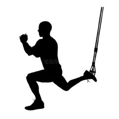

Especialista en readaptación de lesiones de rodilla
Cada vez somos más conscientes de que para mejorar el dolor y una lesión, hay que asistir al gimnasio a reforzar la musculatura.
El problema viene cuando no sabemos cómo hacerlo realmente, y cometemos una serie de errores que nos mantienen en el bucle del estancamiento y del dolor más tiempo del que deberíamos.
Algunos de ellos son los siguientes →
“Hola Edu, ¿podrías decirme algún ejercicio para quitarme el dolor de rodilla?” es probablemente una de las frases que más leo en mi Instagram.
Ni hay ejercicios prohibidos, ni hay ejercicios mágicos. Hay una determinada carga y tipo de movimiento que tu rodilla es capaz de tolerar actualmente, y eso es precisamente lo que hay que encontrar, y ya luego decidir qué ejercicios encajan con eso.
Para una persona que se acaba de romper el menisco hace 1 mes, una sentadilla profunda podría considerarse un ejercicio “prohibido”. Pero una vez esa persona, con otras variantes y ejercicios, recupere la movilidad total, esa sentadilla profunda será uno de los ejercicios “mágicos”.
Que un ejercicio sea bueno o malo depende del momento, no del ejercicio en sí.
Creer que el dolor 0/10 es obligatorio para progresar lo único que hará es que nunca empieces. Además, te generará atrofia y miedo al movimiento.
Toda persona lesionada, por procesos fisiológicos, siempre va a tener dolor. Mejorará si trabajas en rangos de máximo 3-4 sobre 10 (dolor tolerable y sin peligro) e interpretas este dolor como algo positivo que te está haciendo más fuerte.
Si cada vez que duele un poco, piensas que te estás haciendo más daño y paras, nunca construirás tolerancia real a dicho estímulo, y luego te harás la pregunta de...
“¿Por qué me sigue doliendo este ejercicio?” → Porque nunca le has dado la oportunidad a tu cuerpo de adaptarse realmente a él.
Muchos de estos ejercicios están muy bien y son muy buenos, yo de hecho los incluyo a todos y cada uno de los deportistas a los que trato (en el momento oportuno claro)
La diferencia es que aparte de eso, también trabajan ejercicios de fuerza diferentes, que probablemente no hayas visto en ningún sitio (diferentes tipos de contracciones, a diferentes tempos, en diferentes rangos, con diferentes materiales)
No todo es hacer sentadilla, prensa, y extensión de cuádriceps.
(Para que te hagas a la idea, yo tengo más de 650 ejercicios grabados en mi programa )
Hay 3 aspectos que toda persona con dolor / lesionada debería trabajar en el gimnasio para poder salir de una vez por todas de esa situación. Son las siguientes:

Literalmente la base de todo. Si tu rodilla está limitada en grados de flexión, extensión, o rotación, nunca tendrás una rodilla funcional. Es como ponerle el motor de un coche de carreras a un chasis oxidado.
Además, debes trabajar también la movilidad en todos los planos de movimiento (frontal, lateral...)
Hacer repeticiones rápidas (el sube-baja tradicional) irrita el tejido dañado.

Para apagar el dolor y reeducar el sistema nervioso, la ciencia exige contracciones ISO (paradas estáticas bajo alta carga) y EXC (bajadas muy lentas, de 4 a 5 segundos). Esto genera un efecto analgésico inmediato y construye tolerancia real.

Si siempre trabajas ambas piernas a la vez, nunca dotarás de capacidad individual a la lesionada. La “sana” suele compensar hasta un 30%, y hace que cada vez la brecha sea mayor.
Haz variantes de ejercicios en los que haya una pierna adelantada llevándose el 80% de la carga y luego progresa a ejercicios unilaterales totalmente.
Ir al gimnasio a ciegas, copiando rutinas de internet o subiendo el peso por intuición, es jugar a la ruleta rusa con tu rodilla.
La ciencia nos dice qué variables necesitas (movilidad, isometría, trabajo unilateral...), pero el éxito radica en el cómo: los tiempos de tensión exactos, el porcentaje de carga y la progresión semanal que tu caso específico requiere.
Para no dar palos de ciego, sin saber exactamente en qué fase se encuentra tu rodilla, hay que individualizar, no generalizar.
Ya tenemos el chat abierto en Instagram. Vuelve allí y dime:
(Nota: Mi equipo y yo revisamos los casos diariamente para asegurar que la recomendación sea la correcta).